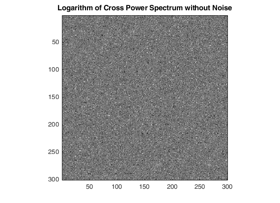
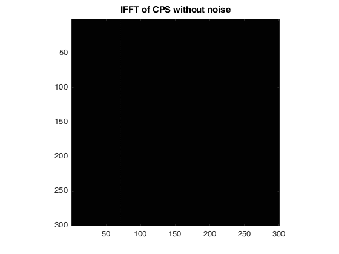
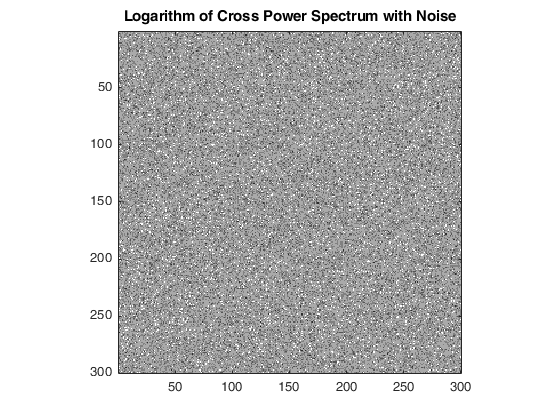
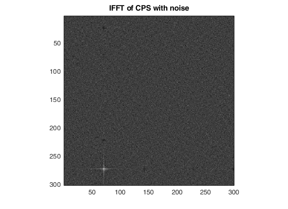

Contents
MyMainScript
tic;
Making rectangle and translated rectangle
M = 300;
N = 300;
m = 50;
n = 70;
x = 50;
y = 50;
tx = -30;
ty = 70;
sig = 20;
I = zeros([M,N]);
J = zeros([M,N]);
I(x:x+m, y:y+n) = 255;
J(x+tx:x+tx+m, y+ty:y+ty+n) = 255;
Computing the Cross Power Spectrum of Noiseless Image
F1 = fft2(J);
F2 = fft2(I);
cps1 = (F1.* conj(F2))./(abs(F1.*F2));
ifftCPS1 = ifft2(cps1);
[idx val] = max(ifftCPS1(:));
[txdash tydash] = ind2sub(size(ifftCPS1),val);
fprintf('The tranlation in x = %f and in y = %f\n', (txdash-1), (tydash-1))
myDisplayImage(log(abs(cps1)), false, 'Logarithm of Cross Power Spectrum without Noise');
myDisplayImage(ifftCPS1, false, 'IFFT of CPS without noise');
FFT being periodic, the value obtained by the above algorithm is true with a shift by 300
The indexing starts at 1, hence the value obtained should be subtracted by 1
So (270, 70) can also be written as (-30, 70)
The tranlation in x = 270.000000 and in y = 70.000000

Computing the Cross Power Spectrum of Noisy Image
I = I + randn(size(I))*sig;
J = J + randn(size(J))*sig;
F1 = fft2(J);
F2 = fft2(I);
cps2 = (F1.* conj(F2))./(abs(F1.*F2));
ifftCPS2 = ifft2(cps2);
[idx val] = max(ifftCPS2(:));
[txdash tydash] = ind2sub(size(ifftCPS2),val);
fprintf('The tranlation in x = %f and in y = %f\n', (txdash-1), (tydash-1));
myDisplayImage(log(abs(cps2)), false, 'Logarithm of Cross Power Spectrum with Noise');
myDisplayImage(ifftCPS2, false, 'IFFT of CPS with noise');
FFT being periodic, the value obtained by the above algorithm is true with a shift by 300
The indexing starts at 1, hence the value obtained should be subtracted by 1
So (270, 70) can also be written as (-30, 70)
The tranlation in x = 270.000000 and in y = 70.000000

Time Complexity
The time complexity of the above algorithm is T(FFT2) + T(Pointwise Matrix Multiplication) + T(InverseFFT2)
T(FFT2) is M*N*log(M*N)
T(Pointwise Matrix Multiplication) is M*N
T(InverseFFT2) is M*N*log(M*N)
Hence overall, it's M*N*log(M*N)
The time complexity for pixel-wise image comparison would require to compute the RMSE of all the possible translations
Computing RMSE is O(M*N)
Number of translations is O(M*N)
Therefore the pixel-wise image comparison would be O(M*M*N*N)
toc;
Elapsed time is 12.935273 seconds.